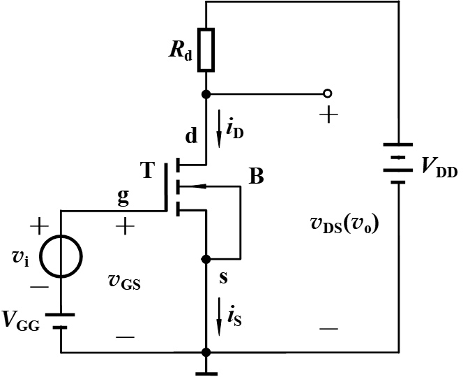
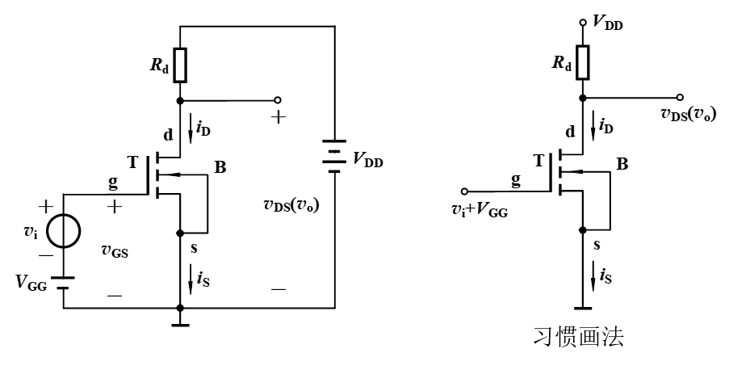
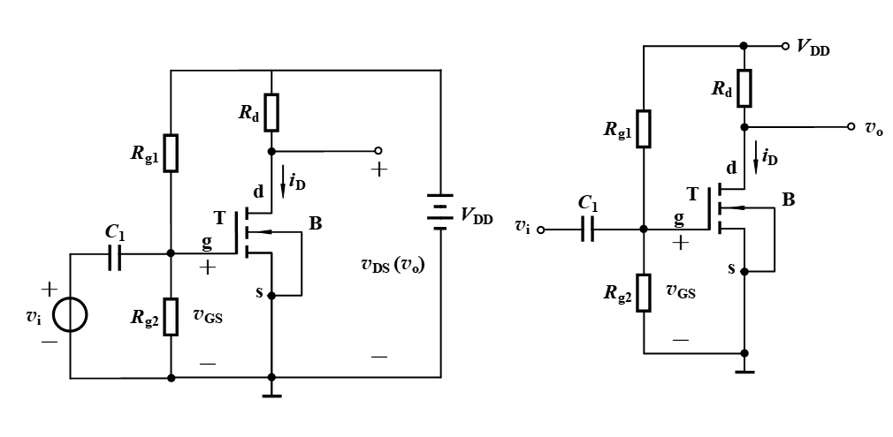
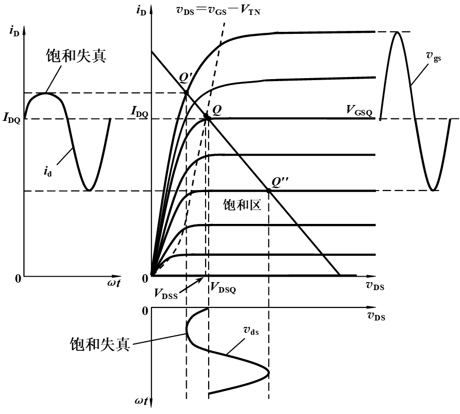

认识基本的共源极，知道工作原理就行了，公式不会要求记忆 图解法求静态工作点，工作的时候是怎么移动的，失真对于图像的影响
场效应管放大电路
基本共源极电路的组成
如何让MOS管工作在饱和区：
- $V_{GG}$提供栅源电压使得$V_{GS}>V_{TN}$
- $V_{DD}$和$R_{D}$提供合适的漏源电压使得$V_{DS}>v_{GS}-V_{TN}$
- 同时$R_d$还有将电流转化为电压的作用
- 通常称$V_{GG}、V_{DD}$为工作电源，$v_I$为信号
信号的传递：
- $v_i\to \Delta v_{GS} \to \Delta i_{D} \to \Delta v_{DS}(=v_O)$
- 因为在饱和区的$i_D=K_n(v_{GS}-V_{TN})^2$,所以可以根据MOS的控制关系得到上面的式子
- 信号由栅源回路输入，漏源回路输出，所以源极时公共端，，所以称为共源回路
基本共源极放大电路工作原理
放大电路的静态和动态
静态：输入信号为0时的工作状态，也叫直流工作状态
静态工作点$Q(I_{DQ},V_{GSQ},V_{DSQ})$
输入信号不为0时，放大电路的工作状态称为交流工作状态
放大电路的直流通路和交流通路
仅有直流电流流经的叫做直流通路
直流电流电压源的内阻为0，交流电流流经直流电压源时不产生任何交流压降，所以直流电压源对于交流相当于短路
放大电路的静态工作点估算
先假设工作在饱和区，利用FET特性方程求解后，需要检验是否满足$V_{DSQ}>V_{GSQ}-V_{TN}>0$，不满足则说明工作在可变电阻区或者截止区
这是增强型NMOS管的计算方法，其他管型的静态工作点方法需要归纳
放大电路的动态工作情况
放大电路的习惯画法
省略工作电源的直流电压符号，仅保留电压源非接地端子，并标注电压源名称
 图解法确定静态工作点
利用直线方程$V_{DS}=V_{DD}-i_DR_d$,$v_{GS}=V_{GG}$
动态工作情况的图解分析
正常工作情况
由于$v_{GS}=V_{GSQ}+v_i$
我们可以得到以下结论：
- $v_i$上升，则$v_{GS}$增加，则$i_D$增加，故而导致$V_{DS}$下降，故而当$v_i$正半周时$|v_{ds}(v_o)|$上升
- $v_{ds}$和$v_i$的相位相反
- 可以测量出放大电路的电压放大倍数
- 可以确定最大不失真输出幅度
静态工作点对于波形失真的影响
截止失真(NMOS)
饱和失真(NMOS)
